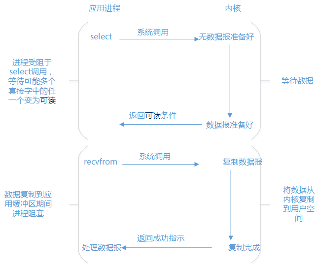
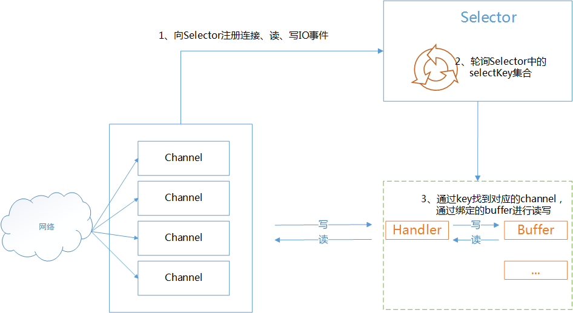
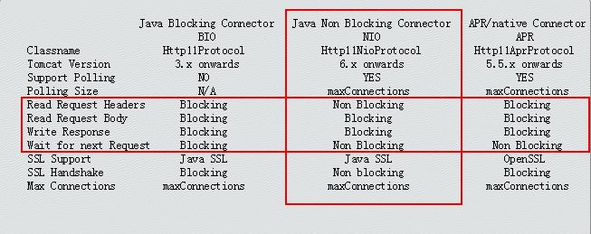
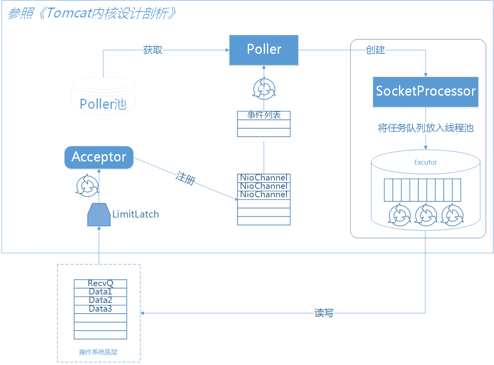
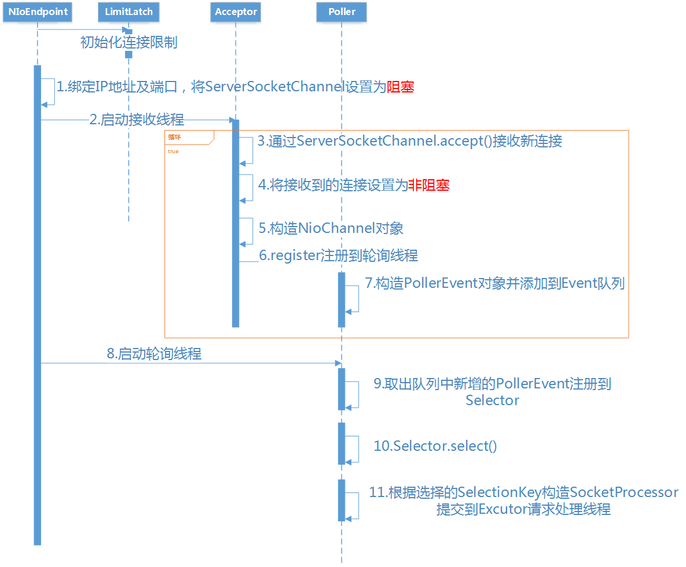

深度解读 Tomcat 中的 NIO 模型
Table of Contents
- I/O 复用模型
- TOMCAT NIO
- 对 IO 模型的支持
- NIO 配置
- 组件
- 源码解读
- 0: 初始化
- 1: 绑定 IP 地址及端口，将 ServerSocketChannel 设置为阻塞
- 2: 启动接收线程
- 3: ServerSocketChannel.accept() 接收新连接
- 4: 将接收到的链接通道设置为非阻塞
- 5: 构造 NioChannel 对象
- 6: register 注册到轮询线程
- 7: 构造 PollerEvent，并添加到事件队列
- 8: 启动轮询线程
- 9: 取出队列中新增的 PollerEvent 并注册到 Selector
- 10: Selector.select()
- 11: 根据选择的 SelectionKey 构造 SocketProcessor 提交到请求处理线程
I/O 复用模型
Tomcat 的 NIO 是基于 I/O 复用来实现的：

内核级别
操作系统为代码所处的特权级别分了 4 个级别。不过现代操作系统只用到了 0 和 3 两个级别。0 和 3 的切换就是用户态和内核态的切换：
- 如果进程执行的是用户代码，当前进程处在用户态
- 如果进程执行的是内核里面的代码，当前进程处在内核态
同步非阻塞
I/O 复用模型，是 同步非阻塞 ：
- 非阻塞：I/O 读写，对应的是 recvfrom 操作，因为数据报文已经准备好，无需阻塞
- 同步：执行是在一个进程里面执行的
- 阻塞：阻塞在 select 上面，必须等到读就绪、写就绪等网络事件有时候
- 多路复用：
- 多路：N 个连接，每一个连接对应一个 channel，或者说多路就是多个 channel
- 复用：多个连接复用了一个线程或者少量线程 (在 Tomcat 中是 Math.min(2,Runtime.getRuntime().availableProcessors()) 个线程)
网络事件：
- 连接就绪
- 接收就绪
- 读就绪
- 写就绪
Selector复用器
I/O 复用主要是通过 Selector 复用器 来实现的：

TOMCAT NIO
对 IO 模型的支持

tomcat 从 6 以后开始支持 NIO 模型，实现是基于 JDK 的 java.nio 包。可以看到对 read body 和 response body 是 Blocking 的
NIO 配置
在 Connector 节点配置：
protocol="org.apache.coyote.http11.Http11NioProtocol" maxConnections=10000 maxThreads=50
Http11NioProtocol 协议下默认最大连接数是 10000，也可以重新修改 maxConnections 的值，同时可以设置最大线程数 maxThreads，这里设置的最大线程数就是 Excutor 的线程池的大小
在 BIO 模式下实际上是没有 maxConnections，即使配置也不会生效 BIO 模式下的 maxConnections 是保持跟 maxThreads 大小一致，因为它是一请求一线程模式
组件

NioEndpoint 一共包含 LimitLatch、Acceptor、Poller、SocketProcessor、Excutor5 个部分：
- LimitLatch ：连接控制器，它负责维护连接数的计算，nio 模式下默认是 10000，达到这个阈值后，就会拒绝连接请求
- Acceptor ：负责接收连接，默认是 1 个线程来执行，将请求的事件注册到事件列表
- Poller： 来负责轮询，Poller 线程数量是 cpu 的核数 Math.min(2,Runtime.getRuntime().availableProcessors())
- SocketProcessor：由 Poller 将就绪的事件生成 SocketProcessor ，同时交给 Excutor 去执行
- Excutor ：线程池的大小就是在 Connector 节点配置的 maxThreads 的值。在 Excutor 的线程中：
- 从 socket 中读取 http request
- 解析成 HttpServletRequest 对象
- 分派到相应的 servlet 并完成逻辑
- 将 response 通过 socket 发回 client
在从 socket 中读数据和往 socket 中写数据的过程，并没有像典型的非阻塞的 NIO 的那样，注册 OP_READ 或 OP_WRITE 事件到主 Selector 而是 直接通过 socket 完成读写，这时是阻塞完成的 但是在 timeout 控制上，使用了 NIO 的 Selector 机制 这个 Selector 并不是 Poller 线程维护的主 Selector，而是 BlockPoller 线程中维护的 Selector，称之为辅 Selector
源码解读
NioEndpoint 执行序列图如下：

0: 初始化
无论是 BIO 还是 NIO，开始都会初始化连接限制，不可能无限增大，NIO 模式下默认是 10000：
public void startInternal() throws Exception { if (!running) { //省略代码... initializeConnectionLatch(); //省略代码... } } protected LimitLatch initializeConnectionLatch() { if (maxConnections==-1) return null; if (connectionLimitLatch==null) { connectionLimitLatch = new LimitLatch(getMaxConnections()); } return connectionLimitLatch; }
1: 绑定 IP 地址及端口，将 ServerSocketChannel 设置为阻塞
Tomcat 的设计初衷主要是为了操作方便。这样这里就跟 BIO 模式下一样了。只不过在 BIO 下这里返回的是 Socket，NIO 下这里返回的是 SocketChannel：
public void bind() throws Exception { //省略代码... serverSock.socket().bind(addr,getBacklog()); serverSock.configureBlocking(true); //省略代码... selectorPool.open(); }
2: 启动接收线程
public void startInternal() throws Exception { if (!running) { //省略代码... startAcceptorThreads(); } } //这个方法实际是在它的超类 AbstractEndpoint 里面 protected final void startAcceptorThreads() { int count = getAcceptorThreadCount(); acceptors = new Acceptor[count]; for (int i = 0; i < count; i++) { acceptors[i] = createAcceptor(); Thread t = new Thread(acceptors[i], getName() + "-Acceptor-" + i); t.setPriority(getAcceptorThreadPriority()); t.setDaemon(getDaemon()); t.start(); } }
3: ServerSocketChannel.accept() 接收新连接
protected class Acceptor extends AbstractEndpoint.Acceptor { @Override public void run() { while (running) { try { //省略代码... SocketChannel socket = null; try { socket = serverSock.accept();//接收新连接 } catch (IOException ioe) { //省略代码... throw ioe; } //省略代码... if (running && !paused) { if (!setSocketOptions(socket)) { //省略代码... } } else { //省略代码... } } catch (SocketTimeoutException sx) { } catch (IOException x) { //省略代码... } catch (OutOfMemoryError oom) { //省略代码... } catch (Throwable t) { //省略代码... } } } }
4: 将接收到的链接通道设置为非阻塞
5: 构造 NioChannel 对象
6: register 注册到轮询线程
protected boolean setSocketOptions(SocketChannel socket) { try { socket.configureBlocking(false);//将连接通道设置为非阻塞 Socket sock = socket.socket(); socketProperties.setProperties(sock); NioChannel channel = nioChannels.poll();//构造 NioChannel 对象 //省略代码... getPoller0().register(channel);//register 注册到轮询线程 } catch (Throwable t) { //省略代码... } //省略代码... }
7: 构造 PollerEvent，并添加到事件队列
protected ConcurrentLinkedQueue<Runnable> events = new ConcurrentLinkedQueue<Runnable>(); public void register(final NioChannel socket) { //省略代码... PollerEvent r = eventCache.poll(); //省略代码... addEvent(r); }
8: 启动轮询线程
public void startInternal() throws Exception { if (!running) { //省略代码... // Start poller threads pollers = new Poller[getPollerThreadCount()]; for (int i=0; i<pollers.length; i++) { pollers[i] = new Poller(); Thread pollerThread = new Thread(pollers[i], getName() + "-ClientPoller-"+i); pollerThread.setPriority(threadPriority); pollerThread.setDaemon(true); pollerThread.start(); } //省略代码... } }
9: 取出队列中新增的 PollerEvent 并注册到 Selector
public static class PollerEvent implements Runnable { //省略代码... @Override public void run() { if ( interestOps == OP_REGISTER ) { try { socket.getIOChannel().register(socket.getPoller().getSelector(), SelectionKey.OP_READ, key); } catch (Exception x) { log.error("", x); } } else { //省略代码... }//end if }//run //省略代码... }
10: Selector.select()
public void run() { // Loop until destroy() is called while (true) { try { //省略代码... try { if ( !close ) { if (wakeupCounter.getAndSet(-1) > 0) { keyCount = selector.selectNow(); } else { keyCount = selector.select(selectorTimeout); } //省略代码... } //省略代码... } catch ( NullPointerException x ) { //省略代码... } catch ( CancelledKeyException x ) { //省略代码... } catch (Throwable x) { //省略代码... } //省略代码... Iterator<SelectionKey> iterator = keyCount > 0 ? selector.selectedKeys().iterator() : null; while (iterator != null && iterator.hasNext()) { SelectionKey sk = iterator.next(); KeyAttachment attachment = (KeyAttachment)sk.attachment(); if (attachment == null) { iterator.remove(); } else { attachment.access(); iterator.remove(); processKey(sk, attachment);//此方法跟下去就是把 SocketProcessor 交给 Excutor 去执行 } }//while //省略代码... } catch (OutOfMemoryError oom) { //省略代码... } }//while //省略代码... }
11: 根据选择的 SelectionKey 构造 SocketProcessor 提交到请求处理线程
public boolean processSocket(NioChannel socket, SocketStatus status, boolean dispatch) { try { //省略代码... SocketProcessor sc = processorCache.poll(); if ( sc == null ) sc = new SocketProcessor(socket,status); else sc.reset(socket,status); if ( dispatch && getExecutor()!=null ) getExecutor().execute(sc); else sc.run(); } catch (RejectedExecutionException rx) { //省略代码... } catch (Throwable t) { //省略代码... } //省略代码... }
NioBlockingSelector 和 BlockPoller
NioEndpoint 对象中维护了一个 NioSelecPool 对象，这个 NioSelectorPool 中又维护了一个 BlockPoller 线程，这个线程就是基于辅 Selector 进行 NIO 的逻辑：执行 servlet 后，得到 response，往 socket 中写数据为例，最终写的过程调用 NioBlockingSelector 的 write 方法。代码如下：
public int write(ByteBuffer buf, NioChannel socket, long writeTimeout,MutableInteger lastWrite) throws IOException { SelectionKey key = socket.getIOChannel().keyFor(socket.getPoller().getSelector()); if ( key == null ) throw new IOException("Key no longer registered"); KeyAttachment att = (KeyAttachment) key.attachment(); int written = 0; boolean timedout = false; int keycount = 1; //assume we can write long time = System.currentTimeMillis(); //start the timeout timer try { while ( (!timedout) && buf.hasRemaining()) { if (keycount > 0) { //only write if we were registered for a write //直接往 socket 中写数据 int cnt = socket.write(buf); //write the data lastWrite.set(cnt); if (cnt == -1) throw new EOFException(); written += cnt; //写数据成功，直接进入下一次循环，继续写 if (cnt > 0) { time = System.currentTimeMillis(); //reset our timeout timer continue; //we successfully wrote, try again without a selector } } //如果写数据返回值 cnt 等于 0，通常是网络不稳定造成的写数据失败 try { //开始一个倒数计数器 if ( att.getWriteLatch()==null || att.getWriteLatch().getCount()==0) att.startWriteLatch(1); //将 socket 注册到辅 Selector，这里 poller 就是 BlockSelector 线程 poller.add(att,SelectionKey.OP_WRITE); //阻塞，直至超时时间唤醒，或者在还没有达到超时时间，在 BlockSelector 中唤醒 att.awaitWriteLatch(writeTimeout,TimeUnit.MILLISECONDS); }catch (InterruptedException ignore) { Thread.interrupted(); } if ( att.getWriteLatch()!=null && att.getWriteLatch().getCount()> 0) { keycount = 0; }else { //还没超时就唤醒，说明网络状态恢复，继续下一次循环，完成写 socket keycount = 1; att.resetWriteLatch(); } if (writeTimeout > 0 && (keycount == 0)) timedout = (System.currentTimeMillis() - time) >= writeTimeout; } //while if (timedout) throw new SocketTimeoutException(); } finally { poller.remove(att,SelectionKey.OP_WRITE); if (timedout && key != null) { poller.cancelKey(socket, key); } } return written; }
当 socket.write() 返回 0 时，说明网络状态不稳定，这时将 socket 注册 OP_WRITE 事件到辅 Selector，由 BlockPoller 线程不断轮询这个辅 Selector，直到发现这个 socket 的写状态恢复了，通过那个倒数计数器，通知 Worker 线程继续写 socket 动作。看一下 BlockSelector 线程的代码逻辑：
public void run() { while (run) { try { ...... Iterator iterator = keyCount > 0 ? selector.selectedKeys().iterator() : null; while (run && iterator != null && iterator.hasNext()) { SelectionKey sk = (SelectionKey) iterator.next(); KeyAttachment attachment = (KeyAttachment)sk.attachment(); try { attachment.access(); iterator.remove(); ; sk.interestOps(sk.interestOps() & (~sk.readyOps())); if ( sk.isReadable() ) { countDown(attachment.getReadLatch()); } //发现 socket 可写状态恢复，将倒数计数器置位，通知 Worker 线程继续 if (sk.isWritable()) { countDown(attachment.getWriteLatch()); } }catch (CancelledKeyException ckx) { if (sk!=null) sk.cancel(); countDown(attachment.getReadLatch()); countDown(attachment.getWriteLatch()); } }//while }catch ( Throwable t ) { log.error("",t); } } events.clear(); try { selector.selectNow();//cancel all remaining keys }catch( Exception ignore ) { if (log.isDebugEnabled())log.debug("",ignore); } }
使用这个辅 Selector 主要是减少线程间的切换，同时还可减轻主 Selector 的负担